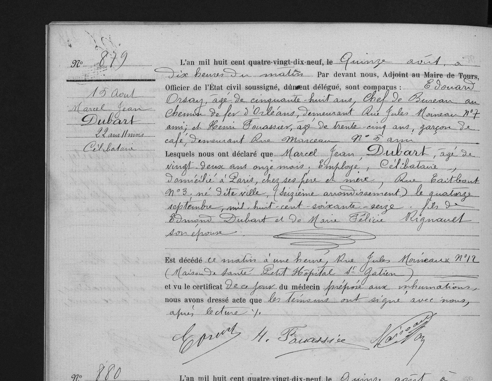

Acte d'état civil · 15 août 1899
Décès de Marcel Jean DUBART, Tours, 15 août 1899
Ce document établit
- Marcel Jean Dubart meurt à Tours le 15 août 1899 à une heure du matin, 12 rue Jules Moinaux, « Maison de santé, Petit Hôpital St-Gatien ». vérifié A0020
- Selon son acte de décès, Marcel a 22 ans 11 mois, est employé, célibataire, domicilié chez ses parents 3 rue Taitbout à Paris, et est né à Paris 16e le 14 septembre 1876. vérifié A0021
- Le décès de Marcel est déclaré par Edouard Orsay, 58 ans, chef de bureau au chemin de fer d'Orléans, demeurant 7 rue Jules Moinaux, et par Henri Fouassier, 35 ans, garçon de café, rue Marceau, tous deux dits amis. vérifié A0022
- La cause du décès de Marcel Dubart n'est pas établie. recherche infructueuse A0024
- En 1897, Louis Edouard Orsay est chef de bureau au chemin de fer d'Orléans. vérifié A0057
- Selon l'acte de décès de Marcel Jean Dubart (Tours, 15/08/1899), il est « fils de Edmond Dubart et de Marie Félicie Rignault son épouse », domicilié « chez ses père et mère, rue Taitbout n° 3 », né « (seizième arrondissement) le quatorze septembre mil huit cent soixante-seize » vérifié A0724
« domicilié à Paris, chez ses père et mère, Rue Taitbout N°3, né dite ville (seizième arrondissement) le quatorze septembre mil huit cent soixante-seize, fils de Edmond Dubart et de Marie Félicie Rignault son épouse » (lecture incertaine : non)
- L'entrée « Dubard Marcel Jean, [14 ou 17] septembre 1876 » de la table du 16e correspond à Marcel Jean Dubart, né le 14 septembre 1876 au 16e arrondissement selon son acte de décès partiellement vérifié A0725
« né dite ville (seizième arrondissement) le quatorze septembre mil huit cent soixante-seize » (lecture incertaine : non)
Ce document contredit
- Hypothèse : Marcel faisait son service militaire à Tours en 1899. contredit A0023
Transcription
dossier/preuves.md#A3
Personnes concernées
Continuer
Toutes les archives →Document précédentParis charitable et prévoyant, 1897 : Hôpital de Notre-Dame de Bon Secours, rue des Plantes, 66 (extrait de moteur Internet Archive non ouvert)1897Document suivantRépertoire annuel d'inhumation du cimetière de Montmartre, 1900-1904, de « Cesselin » à « Flamant » : 13 mai 1903, Dubart Edmond1900/1904